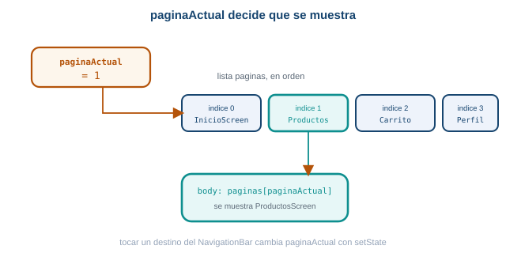
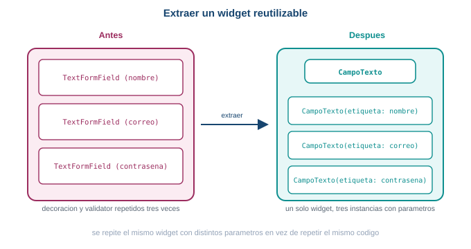

Semana 6. Formularios y componentes reutilizables
| Asignatura | Programación Móvil (IF2004) |
| Grupos | 601 y 602 de Ingeniería Informática |
| Unidad | Unidad 2. Interfaz, datos y persistencia |
1 Lo que vas a lograr
En la Semana 5 aprendiste a navegar entre pantallas con Navigator.push y Navigator.pop, primero en MiniMarket y después en taller_login. Esta semana arranca convirtiendo MiniMarket en una app con varias secciones principales (Inicio, Productos, Carrito, Perfil) manejadas con una barra de navegación inferior. Después vuelves a taller_login para cerrar dos cosas pendientes de ese formulario: que valide de verdad lo que el usuario escribe, y que deje de repetir el mismo código de campo tres veces.
Al terminar la guía sabes:
- Distinguir navegación entre secciones principales (barra inferior) de navegación hacia un detalle (
Navigator.push). - Construir una barra de navegación inferior con
NavigationBary un índice de sección. - Combinar
NavigationBaryNavigator.pushen la misma app, cada uno en su propio nivel. - Envolver un formulario en
Formy validar sus campos conGlobalKey<FormState>. - Escribir funciones
validatorpara correo y contraseña, y bloquear la navegación si el formulario no es válido. - Extraer un widget reutilizable a partir de código duplicado, exponiendo los parámetros necesarios.
- Decidir cuándo conviene extraer un widget y cuándo no vale la pena todavía.
Necesitas MiniMarket de la Semana 5 funcionando (listado de productos y detalle con Navigator.push) y taller_login con login, inicio, rutas con nombre, paso de datos y navegación anidada. Todo lo de esta guía continúa esos dos proyectos.
Esta guía usa Flutter 3.41.9 (canal stable) y Dart SDK 3.11.5, las mismas versiones verificadas desde la Semana 2.
4 Parte 3. Pantallas nuevas, mínimas
Necesitas una pantalla por sección. ProductosScreen ya existe, tal cual la dejaste en la Semana 5: se reutiliza sin cambios. Las otras tres son, por ahora, marcadores de posición simples:
class InicioScreen extends StatelessWidget {
const InicioScreen({super.key});
@override
Widget build(BuildContext context) {
return const Center(
child: Text('Inicio', style: TextStyle(fontSize: 24)),
);
}
}
class CarritoScreen extends StatelessWidget {
const CarritoScreen({super.key});
@override
Widget build(BuildContext context) {
return const Center(
child: Text('Carrito', style: TextStyle(fontSize: 24)),
);
}
}
class PerfilScreen extends StatelessWidget {
const PerfilScreen({super.key});
@override
Widget build(BuildContext context) {
return const Center(
child: Text('Perfil', style: TextStyle(fontSize: 24)),
);
}
}Las mejoras a InicioScreen y PerfilScreen llegan en la Parte 7.
5 Parte 4. PrincipalScreen: un StatefulWidget con paginaActual
PrincipalScreen es la pantalla contenedora, la que Flutter muestra como home de la app. Guarda paginaActual y una lista paginas con una pantalla por índice, en el mismo orden que vas a usar en la barra:
class PrincipalScreen extends StatefulWidget {
const PrincipalScreen({super.key});
@override
State<PrincipalScreen> createState() => _PrincipalScreenState();
}
class _PrincipalScreenState extends State<PrincipalScreen> {
int paginaActual = 0;
final paginas = [
const InicioScreen(),
const ProductosScreen(),
const CarritoScreen(),
const PerfilScreen(),
];
@override
Widget build(BuildContext context) {
return Scaffold(
appBar: AppBar(title: const Text('MiniMarket')),
body: paginas[paginaActual],
);
}
}
El body del Scaffold muestra siempre paginas en la posicion paginaActual.
Nota que todavía no usas IndexedStack: body: paginas[paginaActual] alcanza y es conceptualmente transparente, muestra directamente la pantalla del índice actual. IndexedStack resuelve un problema distinto (que el estado de una sección se pierda al salir de ella), y ya lo usaste en la Semana 5 con taller_login (Parte 14, BottomNavigationBar + IndexedStack) para las pestañas Inicio y Cuenta dentro de una sola pantalla. Aquí no hace falta todavía: cada sección de MiniMarket es una pantalla completa, sin estado propio que conservar al cambiar de sección.
8 Parte 7. Mejorar Inicio y Perfil
Con el patrón funcionando, dale algo de contenido real a InicioScreen y PerfilScreen, sin lógica funcional todavía:
class InicioScreen extends StatelessWidget {
const InicioScreen({super.key});
@override
Widget build(BuildContext context) {
return ListView(
padding: const EdgeInsets.all(16),
children: [
const Text('Bienvenido', style: TextStyle(fontSize: 24, fontWeight: FontWeight.bold)),
const SizedBox(height: 4),
const Text('Encuentra tus productos favoritos', style: TextStyle(color: Colors.black54)),
const SizedBox(height: 16),
Card(
child: ListTile(
leading: const Icon(Icons.local_offer_outlined),
title: const Text('Ofertas'),
),
),
Card(
child: ListTile(
leading: const Icon(Icons.shopping_cart_outlined),
title: const Text('Mi carrito'),
),
),
],
);
}
}class PerfilScreen extends StatelessWidget {
const PerfilScreen({super.key});
@override
Widget build(BuildContext context) {
return ListView(
padding: const EdgeInsets.all(16),
children: [
const CircleAvatar(radius: 40, child: Icon(Icons.person, size: 40)),
const SizedBox(height: 12),
const Center(
child: Text('Nombre del cliente', style: TextStyle(fontSize: 18, fontWeight: FontWeight.bold)),
),
const SizedBox(height: 16),
const ListTile(leading: Icon(Icons.email_outlined), title: Text('correo@ejemplo.com')),
const ListTile(leading: Icon(Icons.phone_outlined), title: Text('300 000 0000')),
],
);
}
}CarritoScreen sigue siendo un marcador de posición. Dale un contenido mínimo parecido a InicioScreen: un título “Tu carrito” y una lista vacía con un texto “Todavía no agregaste productos”. No hace falta lógica real de compras todavía.
Con NavigationBar y Navigator.push conviviendo, la navegación principal de tu app ya está completa. Una app real casi siempre convive también con formularios que hay que validar: ahora vuelves a taller_login para aplicar eso sobre el ejemplo de login que ya conoces.
9 Parte 8. Validación con Form
Hasta la Semana 5, la única validación del login era un if manual que revisaba si el correo estaba vacío. Form reemplaza ese mecanismo por uno declarado junto a cada campo, que además muestra el mensaje de error debajo del campo que falló.
Envuelve el contenido del login en un Form, con una GlobalKey<FormState> que te permite invocar la validación desde el botón:
class _LoginScreenState extends State<LoginScreen> {
final _formKey = GlobalKey<FormState>();
final _correoController = TextEditingController();
final _claveController = TextEditingController();
bool _mostrarClave = false;
@override
Widget build(BuildContext context) {
return Scaffold(
body: SafeArea(
child: SingleChildScrollView(
child: Form(
key: _formKey,
child: Column(
// el resto de la Column sigue igual, con los TextField
// reemplazados por TextFormField en el siguiente paso
),
),
),
),
);
}
}| Pieza nueva | Para qué sirve |
|---|---|
GlobalKey<FormState> |
Una llave que identifica a este Form para poder llamar a sus métodos desde fuera del build, como validate() |
Form.key |
Conecta la llave con este Form específico |
Form.child |
El árbol de widgets del formulario, casi siempre una Column con los campos |
Reemplaza cada TextField por un TextFormField, que agrega el parámetro validator:
TextFormField(
controller: _correoController,
decoration: const InputDecoration(
hintText: 'nombre@correo.com',
prefixIcon: Icon(Icons.email_outlined),
border: OutlineInputBorder(),
),
validator: (valor) {
if (valor == null || valor.isEmpty) {
return 'Escribe tu correo';
}
if (!valor.contains('@') || !valor.contains('.')) {
return 'El correo no tiene un formato válido';
}
return null;
},
)TextFormField(
controller: _claveController,
obscureText: !_mostrarClave,
decoration: InputDecoration(
prefixIcon: const Icon(Icons.lock_outline),
border: const OutlineInputBorder(),
suffixIcon: IconButton(
icon: Icon(_mostrarClave ? Icons.visibility_off_outlined : Icons.visibility_outlined),
onPressed: () {
setState(() {
_mostrarClave = !_mostrarClave;
});
},
),
),
validator: (valor) {
if (valor == null || valor.isEmpty) {
return 'Escribe tu contraseña';
}
if (valor.length < 6) {
return 'La contraseña necesita al menos 6 caracteres';
}
return null;
},
)Pieza de validator |
Para qué sirve |
|---|---|
El parámetro valor |
El texto actual del campo, String? porque puede llegar null |
El valor de retorno null |
Significa “sin error”: el campo es válido |
El valor de retorno String |
El mensaje de error que se muestra debajo del campo |
Por último, la validación real ocurre al tocar “Iniciar sesión”, antes de navegar:
onPressed: () async {
if (!_formKey.currentState!.validate()) {
return;
}
final resultado = await Navigator.pushNamed(
context,
'/inicio',
arguments: ArgumentosInicio(correo: _correoController.text),
);
if (resultado == true) {
_correoController.clear();
_claveController.clear();
}
},_formKey.currentState!.validate() corre el validator de cada TextFormField del formulario, y devuelve true solo si todos pasan. Si alguno falla, Flutter ya se encarga de mostrar el mensaje de error debajo del campo correspondiente: no necesitas leerlos ni mostrarlos tú.
Agrega un segundo campo “Confirmar contraseña” al formulario, con su propio TextFormField, y haz que su validator devuelva un error si su texto no coincide con el de _claveController.text.
final _confirmarClaveController = TextEditingController();
TextFormField(
controller: _confirmarClaveController,
obscureText: true,
decoration: const InputDecoration(
labelText: 'Confirmar contraseña',
border: OutlineInputBorder(),
),
validator: (valor) {
if (valor != _claveController.text) {
return 'Las contraseñas no coinciden';
}
return null;
},
)10 Parte 9. Extraer un widget reutilizable: CampoTexto
Los tres TextFormField del formulario (correo, contraseña, confirmar contraseña) se parecen mucho entre sí: cada uno repite decoration, border y la estructura general. Antes de extraer nada, mira el tamaño de esa repetición.

Se repite el widget con parámetros distintos, no el código completo.
Extrae un widget CampoTexto que reciba lo que cambia entre los tres campos: la etiqueta, el ícono, si es de contraseña, el controller y el validator.
class CampoTexto extends StatefulWidget {
final String etiqueta;
final IconData icono;
final TextEditingController controller;
final String? Function(String?)? validator;
final bool esClave;
const CampoTexto({
super.key,
required this.etiqueta,
required this.icono,
required this.controller,
this.validator,
this.esClave = false,
});
@override
State<CampoTexto> createState() => _CampoTextoState();
}
class _CampoTextoState extends State<CampoTexto> {
bool _mostrarTexto = false;
@override
Widget build(BuildContext context) {
return TextFormField(
controller: widget.controller,
obscureText: widget.esClave && !_mostrarTexto,
validator: widget.validator,
decoration: InputDecoration(
hintText: widget.etiqueta,
prefixIcon: Icon(widget.icono),
border: const OutlineInputBorder(),
suffixIcon: widget.esClave
? IconButton(
icon: Icon(_mostrarTexto
? Icons.visibility_off_outlined
: Icons.visibility_outlined),
onPressed: () {
setState(() {
_mostrarTexto = !_mostrarTexto;
});
},
)
: null,
),
);
}
}Parámetro de CampoTexto |
Para qué sirve |
|---|---|
etiqueta |
El texto de ayuda dentro del campo |
icono |
El ícono a la izquierda |
controller |
El TextEditingController que cada instancia del campo necesita, distinto para correo y para contraseña |
validator |
Se reenvía directo al TextFormField interno, cada instancia trae el suyo |
esClave |
Si es true, oculta el texto y agrega el ícono de mostrar/ocultar con su propio estado interno |
Nota que CampoTexto es StatefulWidget, aunque quien lo usa no vea ese estado desde afuera: el booleano _mostrarTexto es un detalle interno del widget, y cada instancia (correo, contraseña) mantiene el suyo propio sin interferir con las demás.
Con CampoTexto extraído, el formulario del login queda así:
CampoTexto(
etiqueta: 'nombre@correo.com',
icono: Icons.email_outlined,
controller: _correoController,
validator: (valor) {
if (valor == null || valor.isEmpty) return 'Escribe tu correo';
if (!valor.contains('@') || !valor.contains('.')) {
return 'El correo no tiene un formato válido';
}
return null;
},
),
const SizedBox(height: 16),
CampoTexto(
etiqueta: 'Contraseña',
icono: Icons.lock_outline,
controller: _claveController,
esClave: true,
validator: (valor) {
if (valor == null || valor.isEmpty) return 'Escribe tu contraseña';
if (valor.length < 6) return 'La contraseña necesita al menos 6 caracteres';
return null;
},
),Cada instancia recibe sus propios parámetros: el widget es el mismo, los datos cambian.
11 Parte 10. Extraer un widget reutilizable: TarjetaProductor
En _ContenidoInicio de la Semana 05, el itemBuilder del ListView.builder construye un Card con un ListTile en cada vuelta. Es el mismo problema que el formulario: la estructura se repite, solo cambian los datos de productor['nombre'] y productor['ubicacion'].
itemBuilder: (context, indice) {
final productor = productores[indice];
return Card(
child: ListTile(
leading: const Icon(Icons.storefront_outlined),
title: Text(productor['nombre']!),
subtitle: Text(productor['ubicacion']!),
),
);
},Extrae ese Card a un widget propio:
class TarjetaProductor extends StatelessWidget {
final String nombre;
final String ubicacion;
const TarjetaProductor({
super.key,
required this.nombre,
required this.ubicacion,
});
@override
Widget build(BuildContext context) {
return Card(
child: ListTile(
leading: const Icon(Icons.storefront_outlined),
title: Text(nombre),
subtitle: Text(ubicacion),
trailing: const Icon(Icons.chevron_right),
),
);
}
}El ListView.builder y la lista productores de la Semana 05 no cambian de forma: solo el itemBuilder pasa a construir el widget nuevo en vez del Card completo:
Expanded(
child: ListView.builder(
itemCount: productores.length,
itemBuilder: (context, indice) {
final productor = productores[indice];
return TarjetaProductor(
nombre: productor['nombre']!,
ubicacion: productor['ubicacion']!,
);
},
),
),La variable productores sigue siendo la misma lista de mapas de la Semana 05: no se toca, no se borra, solo cambia lo que el itemBuilder construye con cada elemento.
TarjetaProductor es StatelessWidget, a diferencia de CampoTexto: no necesita recordar nada propio entre reconstrucciones, solo mostrar los datos que recibe.
Extrae un widget EtiquetaCategoria a partir de los Chip de categorías (Todos, Verduras, Frutas, Lácteos) que aparecen en el diseño de referencia de la pantalla de inicio. Debe recibir el texto y un color de fondo, y usarse al menos tres veces con datos distintos en una fila con Wrap (visto en la Semana 4).
class EtiquetaCategoria extends StatelessWidget {
final String texto;
final Color color;
const EtiquetaCategoria({super.key, required this.texto, required this.color});
@override
Widget build(BuildContext context) {
return Chip(
label: Text(texto),
backgroundColor: color,
);
}
}Wrap(
spacing: 8,
children: const [
EtiquetaCategoria(texto: 'Todos', color: Colors.green),
EtiquetaCategoria(texto: 'Verduras', color: Colors.lightGreen),
EtiquetaCategoria(texto: 'Frutas', color: Colors.orangeAccent),
EtiquetaCategoria(texto: 'Lácteos', color: Colors.lightBlue),
],
)12 Cuándo extraer un widget
No toda repetición justifica un widget nuevo. Dos señales prácticas te dicen cuándo sí conviene:
- Se repite dos veces o más. Un
Cardque aparece una sola vez en toda la app no necesita su propio widget: el costo de mantener un archivo adicional no se paga con un solo uso. - Mezcla demasiadas responsabilidades en un solo
build. Aunque no se repita, unbuildde 200 líneas que arma la cabecera, el formulario y la lista de una pantalla completa se vuelve difícil de leer y de modificar. Extraer partes de esebuilden widgets con nombre, aunque cada uno se use una sola vez, hace que el código cuente lo que hace cada bloque sin tener que leerlo entero.
Lo contrario también aplica: extraer un widget para dos líneas de código que nunca van a cambiar por separado agrega una capa de indirección que no ayuda a nadie. La pregunta que responde si vale la pena no es “¿puedo extraerlo?”, sino “¿alguien va a necesitar reutilizar o entender esto por separado del resto?”.
Revisa el build completo de InicioScreen después de los cambios de esta guía. Identifica si queda algún bloque que se beneficiaría de convertirse en un widget con nombre, aunque no se repita, solo porque mezcla demasiadas responsabilidades. Justifica tu respuesta en una frase.
13 Errores frecuentes
Error 1
El validator nunca se ejecuta
Causa. El TextFormField con el validator no está dentro del árbol de un Form, o el Form que sí lo envuelve usa una GlobalKey<FormState> distinta de la que llama a validate().
Solución. Confirma que todos los campos del formulario están dentro del mismo Form, y que el botón llama a _formKey.currentState!.validate() usando exactamente la misma llave que el Form declara en su parámetro key.
Error 2
Duplicate GlobalKey detected in widget tree
Duplicate GlobalKey detected in widget tree.Causa. Se creó una GlobalKey<FormState> nueva en cada reconstrucción del build (por ejemplo como variable local dentro de build en vez de como campo de la clase State), o la misma llave se usó en dos Form distintos.
Solución. Declara la GlobalKey<FormState> como campo de la clase State, inicializada una sola vez con final _formKey = GlobalKey<FormState>();, nunca dentro del método build.
Error 3
El widget extraído no recibe los parámetros que necesita
Causa. Al extraer CampoTexto o TarjetaProductor, se olvidó exponer como parámetro algo que una instancia necesita distinto de las demás, por ejemplo el validator o el ícono, y el widget quedó con ese valor fijo adentro.
Solución. Antes de dar por terminada la extracción, revisa las instancias que vas a reemplazar una por una y confirma qué cambia entre ellas. Todo lo que cambie entre instancias necesita ser un parámetro del widget nuevo, aunque solo una instancia lo use distinto de las demás.
14 Tu entregable de la semana
Con quién. El mismo equipo de tres integrantes, sobre el mismo repositorio.
Qué entrega el equipo, sobre las pantallas maquetadas en la Semana 5:
- Navegación real conectada entre esas pantallas, con paso de datos entre al menos dos de ellas.
- El formulario principal del proyecto envuelto en
Form, convalidatoren cada campo y bloqueo de la navegación si el formulario no es válido. - Dos componentes reutilizables propios, extraídos de las pantallas del proyecto, cada uno usado al menos dos veces con datos distintos.
Cómo entrega el equipo. Enlace del repositorio compartido en el canal de actividades de Teams, con al menos 4 commits propios por integrante y al menos una fusión revisada por otro integrante (nadie fusiona su propio Pull Request).
Cuándo. Antes del inicio de la sesión de la Semana 7.
Detalle completo, rúbrica de 100 puntos y procedimiento de verificación en Movil/Semana-06/evaluacion/ (material del docente, no publicado en este sitio).
15 Lista de chequeo de la semana
Antes de entregar, revisa que tienes todo esto
16 Recursos
- Construir un formulario con validación: docs.flutter.dev/cookbook/forms/validation
FormyFormState: api.flutter.dev/flutter/widgets/Form-class.html- Componer widgets propios: docs.flutter.dev/ui/widgets-intro#composition
Programación Móvil (IF2004). Institución Universitaria de Envigado. Facultad de Ingenierías. Semestre 2026-02.
Transparencia. La redacción de esta guía contó con el apoyo de inteligencia artificial, usando el modelo Claude Opus 5 de Anthropic. Todo el contenido fue revisado y validado.